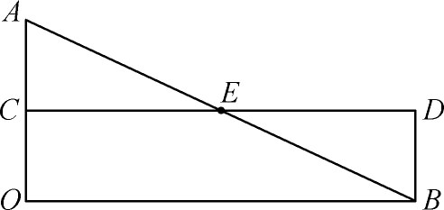

7．数学本身的进展
大约在1100年到1450年这段时期内，尽管思想严受束缚，但还是进行了一些数学活动，其主要中心是牛津大学、巴黎大学、维也纳大学（成立于1365年）和埃尔富特（Erfurt）大学（成立于1392年）。起初的工作是对希腊和阿拉伯文献的直接反应。
第一个值得一提的欧洲学者是比萨的利奥那多（约1170—1250），又名斐波那契（Fibonacci）。他受教育于非洲，在欧洲和小亚细亚游历甚广，并以其精湛掌握当代及以前各代的全部数学知识而闻名。他住在比萨，为西西里的弗雷德里克（Frederick）二世及宫廷哲学家所深知，而他的大多数现存著作也是奉献给他们的。
1202年利奥那多写了划时代的并流传很久的《算经》（Liber Abaci）一书，这是从阿拉伯文和希腊文材料编译成拉丁文的书。当时在欧洲已多少知道一点阿拉伯记数法和印度算法，但只限于在修道院里。一般人还是用罗马数字而且避免用零，因他们不懂零的意思。利奥那多的书产生很大影响并改变了数学的面貌，其中传授了印度人用整数、分数、平方根、立方根进行计算的方法。这些方法其后又由佛罗伦萨（Florentine）的商人加以改进。
利奥那多在《算经》及较晚一部著作《四艺经》（Liber Quadratorum，1225）中都论述了代数。他也照着阿拉伯人的样子用文字而不用记号讲述，并以算术方法作为代数的基础。他讲述了一次和二次确定或不定方程以及某些三次方程。他也像海亚姆一样认为一般三次方程是不能用代数方法解出的。
在几何方面，利奥那多在他的《几何实习》（Practica Geometriae，1220）里重复讲述了欧几里得《原本》及希腊三角术的大部分内容。他传授用三角方法而不用罗马人的几何方法来搞测量，这是稍稍前进了一步。
利奥那多著述的最突出之点是他指出欧几里得在《原本》第十篇中对无理量的分类并不包括一切无理量。利奥那多证明x3＋2x2＋10x＝20的根不能用尺规作出。这第一次表明数系所含的数超过希腊人以是否尺规可作为准则所定的范围。利奥那多又引入了至今仍称为斐波那契数列的概念，在这数列中的每项等于其前两项之和。
除了有利奥那多发表关于无理量的意见外，奥雷姆（Nicole Oresme，约1323—1382）的著作里也有一些创见。此人是利雪（Lisieux）地方的主教兼纳瓦拉（Navarre）巴黎学院的教师。在他的未发表的著作《比例算法》（Algorismus Proportionum，约1360年）中，他引入了分数指数的记法和一些算法。他的想法是（用我们今天的记号）：既然43＝64而（43）1/2＝8，所以43/2＝8。分数指数的记法以后在16世纪的几个作家的著作中重又出现过，但直到17世纪才广泛采用。
奥雷姆的另一项贡献在于对变化的研究。我们记得亚里士多德对质和量是严格区别的。他认为热的强度是一种物质。改变热的强度就得增加或减少一种东西——一种热。奥雷姆认为并没有什么不同种类的热，而只有同一类热的多寡之分。14世纪一些牛津和巴黎的经院哲学家开始从量的方面来思考变化和变化率的问题。他们研究匀速（等速）运动，非匀速（变速）运动以及均匀性的非均匀运动（等加速运动）。
当时这一类思想的顶点是奥雷姆所提出的图线原理。关于这个问题他写了《论均匀与非均匀的强度》（De Uniformitate et Difformitate Intensionum，约1350年）与《论图线》（Tractatus de Latitudinibus Formarum，日期不详）。为研究变化与变化率，奥雷姆按照希腊人的传统指出凡可度量的量（除了数以外）都能用点、线、面来代表。于是，为表示随时间而变的速度，他用一水平线上的点代表时间，称之为经度；而不同时刻的速度则用纵线表示，称之为纬度。为表示一个从O处为OA减到B处为零的速度，他画出了一个三角形（图10.1）。他又指出由AB中点E所定的矩形OBDC与三角形OAB等面积并表示在同一段时间内的匀速运动。奥雷姆把物理变化同整个几何图形联系起来。整个面积代表所论的变化，其中不牵涉到数值。

图10.1
常有人说奥雷姆对提出函数概念，用函数表示物理规律以及函数的分类作出了贡献。人们也把创立坐标几何及函数的图像表示归功于他。事实上他的图线是个含糊的观念，至多是一种图表。虽然奥雷姆在图线（latitudines formarum）名义下表示强度的方法是经院哲学家试图用于研究物理变化的一个主要技巧，也曾在当时的大学里教给学生，并用之于修正亚里士多德的运动理论，但它对其后思想界的影响是不大的。伽利略确也用过这种图形，但思想远为清楚，用意远为明确。又由于笛卡儿尽量避免提及前人，我们也不知道他是否受了奥雷姆思想的影响。